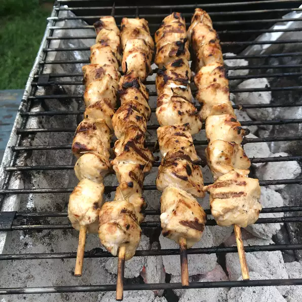

Rosemary Ranch Chicken Kabobs

Ingredients
- ½ cup olive oil
- ½ cup ranch dressing
- 3 tablespoons Worcestershire sauce
- 1 tablespoon minced fresh rosemary
- 2 teaspoons salt
- 1 teaspoon lemon juice
- 1 teaspoon white vinegar
- ¼ teaspoon ground black pepper, or to taste
- 1 tablespoon white sugar, or to taste (Optional)
- 5 skinless, boneless chicken breast halves - cut into 1 inch cubes
Steps
- STEP 1:
In a medium bowl, stir together the olive oil, ranch dressing, Worcestershire sauce, rosemary, salt, lemon juice, white vinegar, pepper, and sugar. Let stand for 5 minutes. Place chicken in the bowl, and stir to coat with the marinade. Cover and refrigerate for 30 minutes.
- STEP 2:
Preheat the grill for medium-high heat. Thread chicken onto skewers and discard marinade.
- STEP 3:
Lightly oil the grill grate. Grill skewers for 8 to 12 minutes, or until the chicken is no longer pink in the center, and the juices run clear.